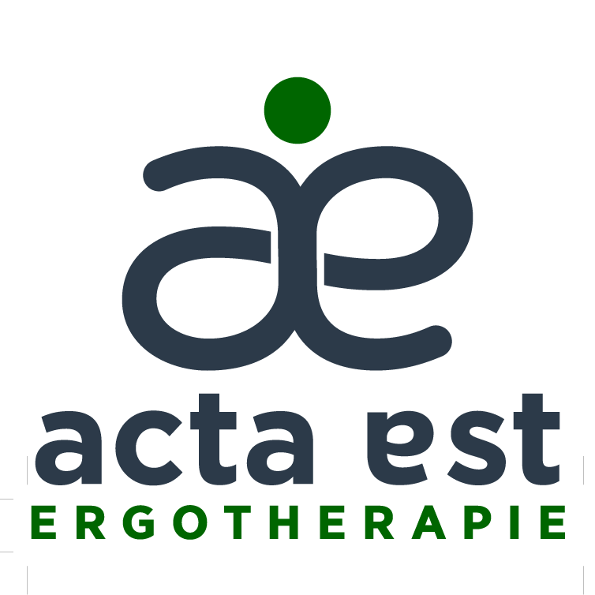

Ergotherapie und Theater
Demnächst in Köln
Du bist Akteur*in deiner Entwicklung
Ganz gleich, ob auf der Bühne oder im Hintergrund:
Du spielst eine große Rolle.
Die Bilder wurden von einer KI generiert und orientieren sich an realen Fotovorlagen
Das Konzept
Ergotherapie und Theater in Köln
Ergotheater ist ein ergotherapeutisch begleitetes Gruppenangebot für Erwachsene, bei dem sich alles um Theater, Begegnung und persönliche Entwicklung dreht. In einem festen Zeitraum von zwölf Wochen arbeitet die Gruppe an einem gemeinsamen Theaterprojekt. Dabei geht es nicht nur ums Schauspiel – sondern um viel mehr:
Du kannst dich kreativ einbringen, neue Rollen ausprobieren oder dich auch im Hintergrund engagieren – z. B. in Technik, Requisite oder Organisation. Körperwahrnehmung, Sprechübungen, Rollenspiele und thematische Gespräche gehören genauso dazu wie echte Bühnenmomente – wenn du möchtest.
Du brauchst keine Vorerfahrung. Und du musst nicht auf die Bühne. Wer lieber hinter den Kulissen mitarbeitet, ist genauso ein*e wichtige*r Akteur*in.
Das Ergotheater bietet dir:
- eine feste Struktur im Alltag
- einen sicheren Raum, um dich auszuprobieren
- Kontakt mit anderen Menschen mit ähnlichen Herausforderungen
- die Chance, dich selbstwirksam und wertvoll zu erleben
Akteur*in heißt: Ich bin Mitgestalter*in
Im Ergotheater sind alle Mitwirkenden Akteur*innen – unabhängig davon, ob sie spielen, Technik betreuen oder mitgestalten.
Sie handeln aktiv – im Projekt und in ihrem eigenen Leben
Du bist nicht einfach Teilnehmer*in. Du übernimmst Verantwortung, entfaltest deine Fähigkeiten und entdeckst neue Seiten an dir – auf der Bühne oder im Hintergrund.
Gemeinsam bereiten wir einen Auftritt vor. Dabei zählen nicht Perfektion oder Applaus, sondern dein Weg: Wie du dich zeigst, mit anderen kooperierst, Neues ausprobierst, und mit Hindernissen umgehst.
Jede Bühne ist anders – und manchmal findet sie gar nicht statt. Was zählt, ist der Prozess. Ob du spielst, Licht machst oder baust: Du gestaltest mit. Und mehr noch: Du wirst Akteur*in deiner eigenen Genesung.
Ergotheater ist Betätigung auf der Bühne
Zielgruppe:
Das Ergotheater ist ein gruppentherapeutisches Angebot für Erwachsene mit psychischen
Herausforderungen. Es richtet sich insbesondere an Menschen mit affektiven Störungen,
Persönlichkeitsstörungen oder Suchterkrankungen. Menschen mit Sprachschwierigkeiten
sind ebenfalls herzlich willkommen.
Eine Teilnahme während akuter psychotischer Episoden oder Kriseninterventionen ist nicht vorgesehen.
Weitere therapeutische Anbindung ist von Vorteil.
Ziele der Maßnahme:
- Psychosoziale Integration durch erlebnisorientiertes Handeln
- Stabilisierung und Prävention durch strukturierte Gruppenarbeit
- Vorbereitung beruflicher Teilhabe durch Förderung alltagsrelevanter Fähigkeiten
Dauer und Setting:
- 12 Wochen
- 1–2 Einheiten pro Woche
- je 90 Minuten
- Gruppe mit 8–12 Akteur*innen
- einmalig angeboten (ggf. wiederholbar)
Inhalte und Förderbereiche:
| Förderbereich | Beispiele |
|---|---|
| Kognitiv | Gedächtnis, Konzentration, Planung, Organisation |
| Motorisch | Grob- und Feinmotorik, Koordination, Körperhaltung |
| Sozial | Kommunikation, Konfliktfähigkeit, Äußerung von Bedürfnissen |
| Emotional | Selbstwahrnehmung, Umgang mit Kritik, Abgrenzung, Emotionsregulation |
| Handwerklich/Digital | Bühnenbild, Kostüm, Medienarbeit |
Phasenmodell der Proben:
- Selbstwahrnehmung: Wie identifiziere ich mich? Eigene Fähigkeiten, Ressourcen sowie Grenzen und Bedürfnisse erkennen. Meine Werte sowie meine aktive Rolle in der Gesellschaft übernehmen
- Umweltwahrnehmung: Welche Wirkung hat der Raum und die anderen auf mich. Wie funktioniere ich abhängig vom Setting?
- Zielsetzung: Welche Rolle habe ich? Wie kann ich diese Rolle erreichen? Wie äußere effektiv meine Bedürfnisse damit ich besser handeln kann?
- Handlungsphase: Handlung-Reflexion-Anpassung. Akteur*in als handelndes Wesen im Stück. Wiederholung. Transfer im Leben
- Abschlussphase: (optional) Ergebnispräsentation, interne oder externe Aufführung
- Reflexion: Abschlussgespräch, Verabschiedung oder ggf neue Zielsetzung
bis der Handlungsphase: Einstieg jederzeit möglich...
Ergotheater – ein Safe Space. Alle Menschen, die einen sicheren Ort brauchen, sind bei uns willkommen.
Zu Beginn ist der Einstieg jederzeit möglich . Doch mit der Handlungsphase schließen
wir die Gruppe – nicht, um auszugrenzen, sondern um den geschützten Raum zu bewahren.
Ein Safe Space ist dort, wo Menschen sich zeigen dürfen – mit allem, was sie sind.
Wo Ausdruck erlaubt ist, Fehler willkommen sind und niemand beurteilt wird.
Evaluation:
Unsere Angebote im Ergotheater
Theaterpädagogische Handlungen

Aktivierung von Körper und Stimme
Mit Spielen und Musik wecken wir unser inneres Kind und entwickeln verloren geglaubte Fähigkeiten wie Kreativität, Selbstvertrauen und lösungsorientiertes Denken.

Textarbeit mit der Acta-Est-Methode - stylisiertes narratives Theater
Die methodische Arbeit mit Texten aus dem internationalen Repertoire fördert sowohl Fähigkeiten wie Gedächtnis und Konzentration als auch das Erleben von Erfolg. Das Niveau der Texte bleibt stets im Rahmen der individuellen Lernzone der jeweiligen Teilnehmenden.

Die Akteur*innen mit dem "Lampenfieber"
Das Ergotheater hat die Aufgabe, zu ermutigen und zu motivieren. Wir verlassen aktiv unsere Komfortzone – mit Respekt vor den Grenzen unserer Akteurinnen. Das Theater vereint mehrere Bereiche und Tätigkeiten, die gleichwertig sind: Unterstützung bei Bühnenbild, Licht und Ton ist keineswegs zu unterschätzen. Das Mitmachen auf der Bühne bleibt für die Akteurinnen freiwillig.
Ergotherapeutische Handlungen

Einzelgespräche
Der Ergotherapeut erkennt nicht nur, was machbar ist und was nicht, sondern auch, worin genau die Schwierigkeiten liegen – und wie man ihnen begegnen kann: durch Edukation, Anpassung oder das (Wieder)Erlernen von Fähigkeiten.
Auch im Rahmen des Ergotheaters gibt es Raum für Einzelgespräche – selbst wenn die Themen nicht in direktem Zusammenhang mit dem Theaterprojekt stehen.

Therapeutische Begleitung bei den Handlungen
Akteur*in bedeutet kein Selbstläufer*in. Der Ergotherapeut begleitet die Akteur*innen bei ihren Handlungen auf der Bühne, beobachtet deren Entwicklung und unterstützt gezielt den Transfer in den Alltag. Dieser Prozess verläuft individuell und organisch – orientiert an den jeweiligen Ressourcen und Zielen der Akteur*innen.

Vorträge und Workshops
Begleitend zum Theaterprozess bieten wir praxisnahe Impulse, die dich auch über das Projekt hinaus stärken können:
- Workshops zum metakognitiven Training
- gezieltes Kommunikationscoaching
- ein Kurs für Zeitmanagement
- Training für Vorstellungsgespräche
- und weitere alltagsnahe Themen, die dich weiterbringen
Aktuelle Termine

Sei von Anfang an dabei – als Akteur*in!
Das Ergotheater startet bald – aber nicht ohne dich.
Wir planen den Beginn dieser einzigartigen Gruppenmaßnahme. Bevor es losgeht, laden wir dich ein, Teil des Entstehungsprozesses zu werden.
🔍 Hast du Interesse?
Dann melde dich bei uns – wir schicken dir einen kurzen Fragebogen.
Damit hilfst du uns, das Angebot so zu gestalten, dass es wirklich zu dir passt.
📩 Nach deiner Rückmeldung laden wir dich zu einem persönlichen Infotreffen ein.
Dort kannst du uns kennenlernen, mehr über das Projekt erfahren – und entscheiden, ob du dabei sein möchtest.
🎭 Das Ergotheater ist kein Kurs von der Stange. Du bist kein*e Teilnehmer*in. Du bist Akteur*in.
Jetzt vormerken – später entscheiden.
Schreib uns eine kurze Nachricht!
Kontakt
Zum Seitenanfang
Antonis Chrysoulakis Ergotherapeut & Theatermacher
Mitglied von DVE & WFOT

Ich komme aus Athen und lebe seit 2011 in Deutschland. Ich bin staatlich anerkannter Ergotherapeut und arbeite aktuell mit dem Schwerpunkt psychosozialer Bereich und Arbeitstherapie.
Nach meinem Theaterstudium habe ich inszeniert, unterrichtet und Gruppen geleitet. 2017 gründete ich in Deutschland das Acta Est Theaterstudio
Mit Sitz in Düsseldorf habe ich die Regie in zahlreichen Produktionen in Kooperation mit Trägern wie Zakk, FFT, Schauspiel Köln, Diakonie, Multikulturellem Forum u.a. geführt.
Meine erste große Produktion in Deutschland war "Warum musste Theo sterben?" ein Theaterstück, über die Morde des NSU. Es wurde u.a. im Schauspiel Köln, im Pathos-Theater München, im FFT Düsseldorf, im Agora Castrop-Rauxel, in der Färberei Wuppertal gezeigt.
Mit dem Ergotheater verbinde ich beide Welten:
Therapie durch Handlung, Bühne als Lebensraum, Betätigung als Ausdruck.
Ein Ort, an dem man „kein*e Zuschauer*in ist“, sondern Akteur*in – im Stück wie im eigenen Leben.